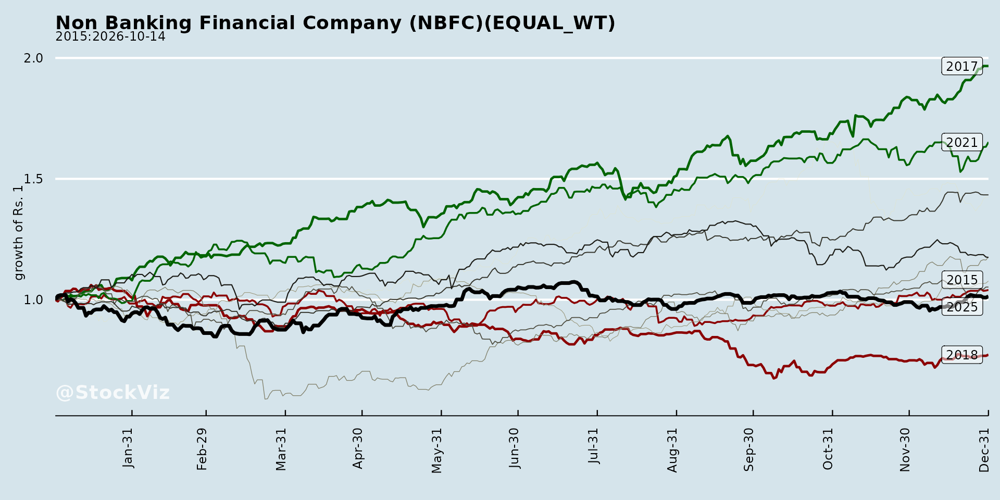
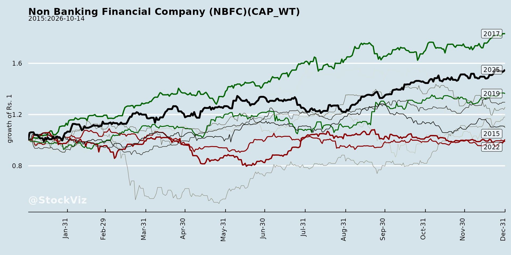
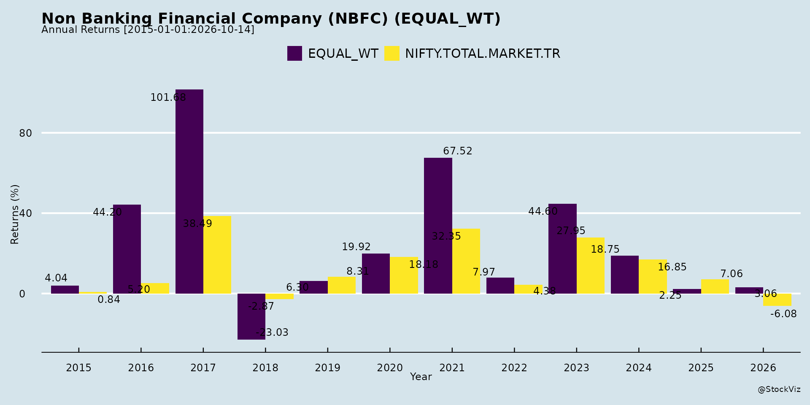
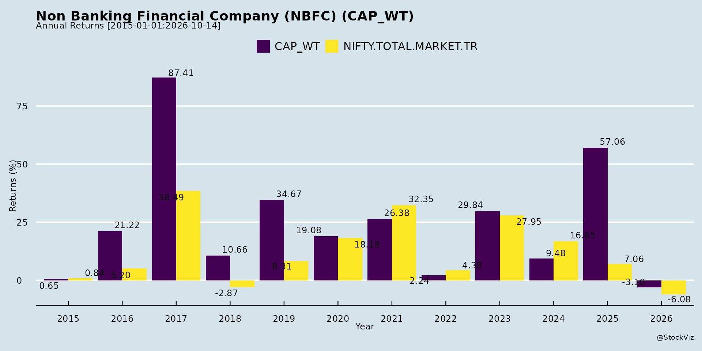
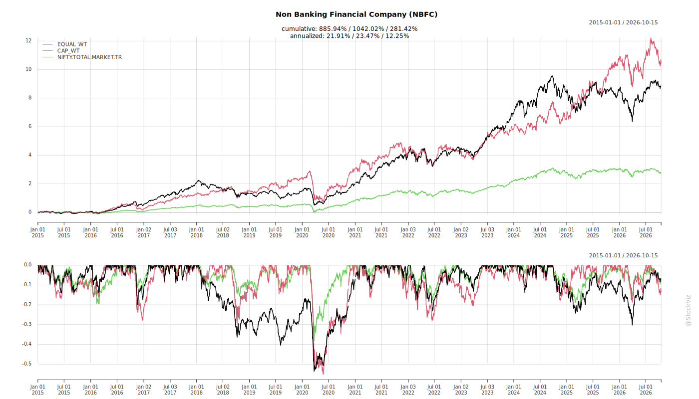
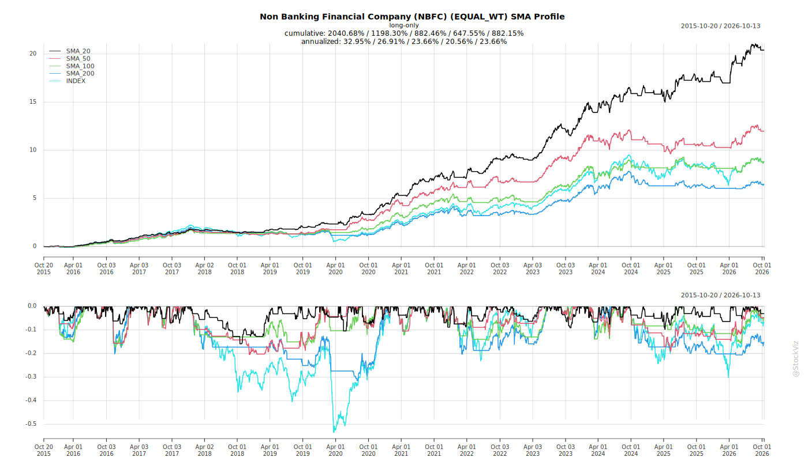
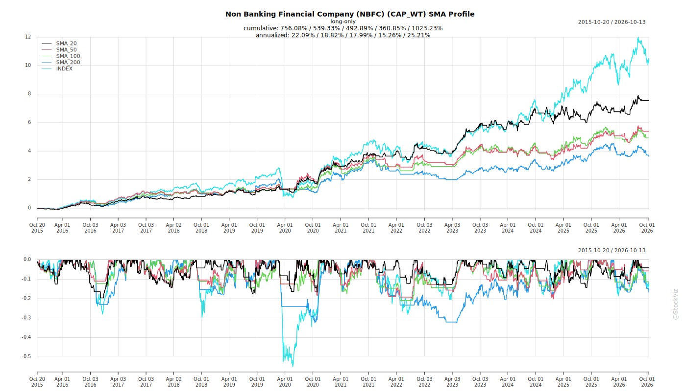
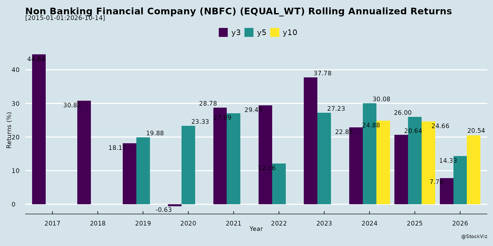
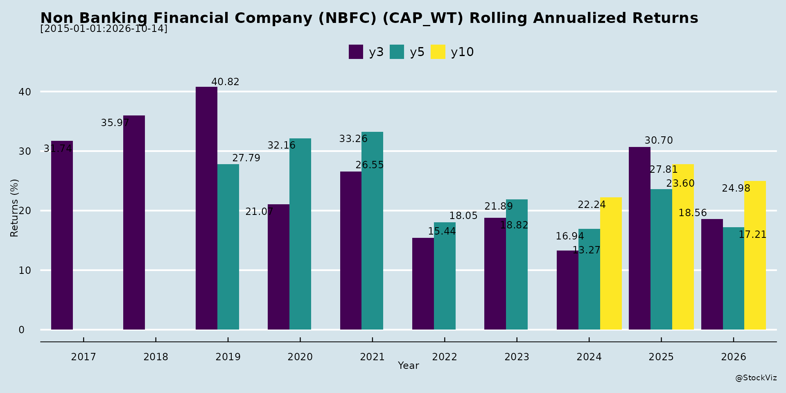

asof: 2026-04-16
The Evolution of Challenges in the Financial Sector
Over the past decade, the lending and financial services industry has navigated a gauntlet of macroeconomic shocks and structural shifts. These historical headwinds have fundamentally altered how lenders assess risk and operate.
1. Macroeconomic and Systemic Crises The sector faced a severely challenging decade marked by consecutive disruptions. The evolution of these challenges began with the 2016-2017 demonetization, followed by the 2017-2018 GST implementation, which temporarily disrupted the cash flows of small traders and manufacturers [1-4]. This was quickly compounded by the 2018-2019 NBFC liquidity crisis, and subsequently, the global standstill caused by the COVID-19 pandemic in 2019-2021 [1-4]. Furthermore, lenders catering to rural and micro-segments had to navigate low real income growth in rural households and regional political developments [5, 6].
2. Over-leveraging and Asset Quality Risks As markets recovered and competition intensified, a major challenge evolved around the over-leveraging of small borrowers [2, 4-6]. In unsecured lending segments—such as personal, professional, and traditional business loans—the industry saw a spike in Non-Performing Loans (NCLs) driven by multiple funding lines and high loan inquiries for single customers [7-10]. Unsecured lending, particularly to non-salaried individuals, remains exceptionally difficult today, forcing the industry to heavily restrict access to unsecured business loans [11-13].
3. Technological and Operational Hurdles Technology is aggressively changing the financial landscape, altering how institutions underwrite, distribute, and conduct operations [14, 15]. Adapting to changing customer behaviors that demand faster decision-making, frictionless service, and personalization poses an ongoing challenge [16, 17]. Furthermore, balancing three decades of hardcoded legacy practices with the need for modern, agile transformation remains a significant execution hurdle for older institutions [18-21].
4. Talent Acquisition and Regulatory Shifts Interestingly, for established companies, the availability of debt and capital is no longer the primary constraint; rather, the availability and continuous upskilling of the right human talent has emerged as a critical challenge that could derail long-term visions [16, 17, 22, 23]. Lenders also face growing competition, continual inflationary trends, increasing costs of obtaining funds, and tighter regulatory thresholds as the RBI aligns NBFC regulations closer to those of traditional banks [24-26].
The Evolution of Opportunities over Time
While the challenges have been steep, they forced the industry to abandon unreasonable growth strategies, resulting in more disciplined, risk-focused, and structurally stronger institutions [27-30]. Out of this consolidation, several massive opportunities have emerged.
1. The Shift to Secured Lending and Product Innovation The dilution of the traditional Joint Liability Group (JLG) microfinance culture has driven lenders to innovate their product structures [31-34]. There is a pronounced industry-wide shift from risky, unsecured loans toward secured, cash-flow-backed lending [35, 36]. Companies are pivoting heavily toward asset-backed models, such as Loan Against Property (LAP) for MSMEs and secured gold loans, which offer a cleaner balance sheet, lower risk, and higher return on assets [35-40].
2. Deepening Penetration in Underserved Markets India’s financial services market remains highly underpenetrated, presenting a vast market size [22, 23]. There is a massive ₹20-25 lakh crore unmet credit demand in the MSME sector, with over 80% of MSMEs still operating outside formal credit channels [41]. Tremendous growth potential exists in Tier 2, Tier 3, and Tier 4 cities, driven by government infrastructure spending, rural farmer welfare programs, and affordable housing initiatives [42-45]. Because larger banks often ignore smaller borrowers due to low margins, NBFCs have a distinct advantage in serving these grassroots customers with localized attention [46-48].
3. Embedded Finance and the “Phygital” Model Credit demand is evolving into two distinct segments. The first requires traditional, relationship-led, on-ground branch execution for small ticket enterprise loans [49, 50]. The second is the rapidly growing transaction-led embedded merchant financing, where high-velocity underwriting relies on digital payments and platform data rather than physical proximity [49-52]. However, to successfully underwrite the Indian MSME entrepreneur, lenders are finding that pure fintech solutions are insufficient; success requires a “phygital” model that combines brick-and-mortar wisdom with technological leverage [53-56].
4. Demographic Shifts and New Asset Classes The formal economy is welcoming a massive influx of new demographics. A notable recent opportunity is the rapid emergence of the “new to credit” profile, specifically borrowers in the below-25 age group, which has seen an 11% year-over-year growth [57, 58]. Concurrently, the boom in e-commerce and logistics in semi-urban areas has significantly increased the demand for commercial vehicles and used vehicle financing to support last-mile distribution fleets [59-66].
5. Emerging Infrastructure and Corporate Mid-Market Lending As the energy and infrastructure landscapes shift, early movers are finding lucrative opportunities beyond conventional power. There is strong momentum in financing sustainable and distributed infrastructure, including electric vehicles (EVs), battery swapping, data centers, and bioenergy [67-73]. Additionally, as some traditional players vacate the space, a significant gap has opened up in Corporate Mid-market Lending and real estate financing, allowing well-capitalized NBFCs to fund mid-sized, investment-grade companies [74-77].
asof: 2026-04-16
The Non-Banking Financial Company (NBFC) and lending industry is currently navigating a variety of significant headwinds spanning economic, regulatory, operational, and environmental factors:
Macroeconomic and Market Pressures Lenders are facing stress due to the over-leveraging of small borrowers and low growth in real incomes within rural households [1, 2]. Broader macroeconomic pressures are negatively impacting the unsecured lending space and the Micro, Small, and Medium Enterprises (MSME) sectors across the industry [3-5]. Furthermore, shifting borrower dynamics, such as changing Joint Liability Group (JLG) cultures, and sluggish infrastructure spending have added to the overall market uncertainty [1, 6].
Rising Costs and Inflation Firms are grappling with the increasing costs of obtaining funds [7-9]. A major contributor to this challenge is that banks are not freely passing on the benefits of benchmark interest rate reductions (MCLR) to NBFCs, severely limiting the relief lenders get on their cost of borrowing [10-13]. Alongside rising borrowing costs, continual inflationary trends are driving up operating expenses, particularly through increasing employee salaries and branch rents [7, 14].
Intense Competition The sector is experiencing growing competition from banks, financial institutions, and peer NBFCs, which is compounded for some by limited geographical presences [7, 15, 16]. When debt and capital are easily available, this heightened competition acts as a lure for financial institutions to chase faster growth by improperly loosening their credit filters or prematurely reducing their pricing [17].
Regulatory and Compliance Challenges The industry is dealing with severe regulatory overhang and uncertainties [1, 2]. A significant hurdle is the Reserve Bank of India’s (RBI) ongoing efforts to align the regulatory thresholds of NBFCs with those of traditional banks, which requires strict and costly compliance adjustments [18].
Asset Quality and Delinquencies Firms are reporting an increase in write-offs and fresh delinquencies, leading to higher Non-Performing Assets (NPAs) [4]. This industry-wide stress is particularly pronounced in Micro Business Loans, Microfinance Institution (MFI) loans, and certain vehicle finance subsegments [4, 19].
Technological Disruption Rapid technological implementation and advancements are fundamentally changing the financial services landscape [20, 21]. Because technology is rapidly altering how loans are underwritten, distributed, and managed, it poses a severe operational threat to companies that fail to remain agile and adapt their systems [21].
Human Capital Constraints Despite technological advancements, lending remains a highly human-capital-intensive business [22]. Finding the right talent and continuously upskilling employees are critical roadblocks, and some companies have faced significant challenges with high employee attrition rates when expanding into new geographical regions [23, 24].
Environmental and Regional Risks The industry is increasingly exposed to emerging, non-traditional threats such as climate risk [25]. Because the lending business is spread across various sectors and geographies, uncontrollable factors like heavy rains or monsoon deficits directly disrupt borrower capacity utilization, vehicle deployment, and rural cash flows, which in turn impacts loan repayments [26-28]. Additionally, unforeseen regional political developments continue to create pockets of short-term uncertainty [1].
asof: 2026-04-16
Non-Banking Financial Companies (NBFCs) are rapidly gaining prominence as critical intermediaries in the retail finance and credit space. The industry has seen substantial expansion, with public funds in NBFCs increasing significantly and projections suggesting that NBFC credit will grow at a robust compound annual growth rate (CAGR) of 13% to 17% in the coming years [1-3].
To thoroughly understand this industry, several key concepts and operational strategies stand out:
1. Focus on the Underserved and “New to Credit” Markets A defining characteristic of the NBFC sector is its focus on driving financial inclusion at the grassroots level [4, 5]. Traditional banks often target individuals and businesses with strong financial track records and formal bureau histories [6]. In contrast, NBFCs cater heavily to the underserved, unbanked, and informal segments of the economy, particularly in Tier II, Tier III, and rural geographies [4, 7-9]. Many of their clients are “New to Credit” (NTC) borrowers, meaning the NBFC serves as their entry point into the formal financial ecosystem [10].
2. Cash-Flow Based Underwriting Over Pure Collateral Because their customer base often lacks audited financials or formal income documentation, NBFCs have developed a unique competitive edge through cash-flow-based assessments and deep demographic knowledge [6, 11, 12]. Rather than relying solely on standard documentation, NBFCs use local intelligence and physically verify business operations [12, 13]. For example, field agents might assess a micro-entrepreneur’s income by visiting their store to calculate the margins on specific goods sold or by tracking the raw materials utilized by a local craftsman [14]. To mitigate the risks of informal lending, companies often mandate guarantors, conduct physical verifications, and adjust Loan-to-Value (LTV) ratios based on the risk profile of specific locations [12, 15, 16].
3. Phygital and Relationship-Driven Operating Models Success in this industry requires intense on-ground execution paired with technology [17]. NBFCs utilize a “branch-led, relationship-driven” model where local relationship managers handle end-to-end sourcing, underwriting, and collections [13, 18]. Because many customers require financial education and “hand-holding,” NBFCs maintain close contact through monthly customer meets, loan melas (fairs), and roadshows [19-21]. Simultaneously, the industry is increasingly adopting digital-first journeys, integrating AI, automated credit bureau checks, and alternative data to improve turnaround times and reduce manual workloads [12, 22, 23].
4. Diversified and Granular Product Portfolios NBFCs mitigate risk by offering a highly granular and diversified suite of loan products [22, 24]. The most prominent asset classes driving growth include: * Vehicle Finance: Financing for two-wheelers, tractors, commercial vehicles, and particularly used vehicles for small transport operators looking to expand their income [25-27]. Vehicle finance makes up roughly 25-27% of NBFC Assets Under Management (AUM) and is anticipated to sustain strong growth [2, 28]. * MSME and Business Loans: Small-ticket working capital and business expansion loans (often averaging around ₹1 lakh) for local traders, kirana stores, and micro-manufacturers [29-31]. * Affordable Housing and Mortgage Loans: Providing home purchase and construction loans to low-income individuals, which also constitutes a massive portion (25-27%) of the industry’s AUM [2, 32]. * Gold Loans: Secured, short-term lending against gold jewelry, which offers quick liquidity to consumers and maintains high asset quality for the lender [7, 33].
5. Strategic Partnerships and Direct Assignment (DA) Funding and liquidity management are highly strategic in the NBFC sector. Firms actively engage in Direct Assignment (DA) transactions, where they sell portions of their created loan books to traditional banks [34]. Because NBFC portfolios heavily feature rural and micro-loans, these assets qualify for Priority Sector Lending (PSL) [35]. Banks purchase these portfolios to meet their regulatory PSL targets, which in turn provides the NBFC with crucial capital, reduces their cost of funds, and helps with Asset Liability Management (ALM) [35]. Additionally, larger NBFCs often partner with smaller, regional NBFCs, acting as an “extended distribution arm” to fund them and expand geographical reach without establishing new physical branches [5, 36].
6. Stringent Regulatory Environment The industry operates under the strict oversight of the Reserve Bank of India (RBI), which has implemented a Scale-Based Regulatory Framework categorizing NBFCs into Base, Middle, and Upper layers [8, 37-39]. NBFCs are subject to stringent capital adequacy requirements (CRAR), Net Owned Fund (NOF) minimums, and specific provisioning norms for non-performing assets (NPAs) [40-42]. Consequently, companies that maintain robust regulatory compliance and ethical collection practices view this discipline as a significant competitive advantage [43, 44].
7. Inherent Industry Risks While the growth potential is vast, the industry faces notable challenges. Key weaknesses include growing competition from banks entering the space, inflationary trends, and the increasing costs of obtaining funds [22]. Furthermore, because lending spans various geographies and informal sectors, NBFCs are highly vulnerable to localized macroeconomic shocks, such as heavy rains disrupting regional commerce or shifts in specific industries [45]. Ultimately, leaders in the space emphasize that NBFC lending is not about avoiding risk, but rather about pricing and managing risk with extreme discipline over long-term cycles [45-47].
asof: 2026-04-16
The Non-Banking Financial Company (NBFC) and broader financial services industry is currently benefiting from several powerful tailwinds spanning macroeconomic growth, technological advancements, favorable government policies, and massive underpenetrated markets.
Here is a detailed breakdown of the key tailwinds driving growth in this sector:
Robust Macroeconomic and Demographic Drivers * Strong Economic Fundamentals: The industry is underpinned by India’s robust growth outlook, resilient domestic demand, and strong macroeconomic fundamentals [1]. * Favorable Demographics and “New to Credit” Customers: The emergence of a “new to credit” profile, specifically borrowers in the below-25 age group, is bringing a whole new segment into the credit industry. This demographic has witnessed a year-on-year growth of almost 11% [2, 3]. Growth is also being fueled by a rising middle-class population, rapid urbanization, and increasing per capita GDP [4]. * Rising Rural Incomes: With two-thirds of India’s population living in rural areas where financial services have historically made few inroads, the steady rise in rural incomes is creating an increasingly significant market for financial services [5]. Additionally, improved cash flow availability due to healthy harvesting cycles has allowed rural customers to make timely repayments [6].
Digitalization and Technological Advancements * Deepening Digital Infrastructure: A strong push towards digitization, online distribution, and the deepening of digital payments across ecosystems (like MSMEs) is making lending structurally more relevant and accessible [7, 8]. * Operational Efficiency through AI: Technology and AI integration are transforming how NBFCs underwrite, distribute, and conduct operations [9]. Digital platforms, data analytics, and early warning systems are helping lenders alleviate manual workloads, reduce turnaround times (TAT), enhance customer service, and scale up disbursements without needing large physical setups or proportional rises in operating costs [5, 10-12].
Favorable Government Policies and Regulatory Initiatives * Tax Relief and Interest Rate Cuts: Recent policy initiatives, including GST rationalization, tax relief measures, and repo rate cuts, are expected to stimulate consumption and economic activity [1]. Specifically, GST rate reductions and interest rate cuts have brought down the cost of vehicles and reduced EMI burdens, which has strongly supported sustained demand in vehicle finance [13-15]. * Infrastructure and Rural Programs: The introduction of rural infrastructure and farmer welfare programs is expected to translate into higher rural demand, particularly for vehicles and small business loans [16]. Furthermore, massive improvements in road infrastructure are leading to the creation of new fleets, which in turn expands the market for used commercial vehicles [17]. * Government Support for MSMEs: Government initiatives, such as Credit Guarantee schemes, are providing strong momentum for lending to small and medium enterprises [18].
Massive Underpenetrated Markets and Financial Inclusion * Vast Unmet Credit Demand: There is exceptionally low credit penetration across major asset classes, presenting a massive runway for growth [4]. For instance, over 80% of MSMEs remain outside the formal credit system, resulting in an estimated ₹20-25 lakh crore of unmet credit demand [18]. * Geographical Expansion: There are immense opportunities for geographical expansion into Tier 2, 3, and 4 markets, which remain underpenetrated and have less competition [10, 19]. * Monetization of Household Savings: Increasing financial inclusion is driving a change in household savings patterns, channeling more funds into the formal financial sector [4].
Sector-Specific Tailwinds * Vehicle Finance: There is broad-based momentum across commercial vehicles (CVs), passenger vehicles (PVs), and two-wheelers [13, 15]. This is supported by improved capacity utilization, solid underlying-asset sales, and pent-up replacement demand [20-22]. * Gold Loans: Because unsecured lending and business loans have become more difficult for non-salaried individuals to obtain, consumers are increasingly utilizing gold as collateral to meet their funding needs, creating a surge in demand for gold loan financiers [23-25]. * Housing and Real Estate: The industry is seeing sustained housing demand and healthy traction in mortgage-backed lending [13]. The real estate financing market is at the beginning of a growth cycle due to all-time high affordability, developer consolidation, and a major market gap left by other HFCs/NBFCs vacating the space [19].
asof: 2026-04-16
The general outlook for the Non-Banking Financial Company (NBFC) and lending industry is highly positive, characterized by robust growth projections and strong structural demand. Projections indicate that NBFC credit is expected to grow at a compound annual growth rate (CAGR) of 13% to 17% between FY24 and FY27 [1-3]. Lending businesses are prospering and are expected to achieve a 13% to 14% credit growth in FY25 without the need to rely on large physical setups [4]. Industry operators note that for a sustainable lending business, an annual growth rate of 15% to 25% should be respected and is considered very healthy [5, 6]. Additionally, sustainable Return on Equity (ROE) figures for these institutions are estimated to comfortably range between 14% to 17% [5, 6]. Overall, NBFCs are rapidly gaining prominence as essential intermediaries in the retail finance space [7].
Several macroeconomic and structural trends are actively driving this optimistic outlook. India’s growth outlook remains robust, supported by resilient domestic demand, favorable demographics, increasing per capita GDP, and rapid urbanization [8, 9]. Furthermore, recent policy initiatives—such as GST rationalization, tax relief measures, repo rate cuts, and accommodative liquidity policies—are expected to further stimulate economic activity and consumption [9]. The government’s focused introduction of rural infrastructure and farmer welfare programs is also likely to translate into higher rural demand, particularly for small businesses and vehicles [10]. Over two-thirds of the country’s population lives in rural areas where formal financial services have historically made few inroads, and steadily rising incomes in these geographies are creating an increasingly significant market [4].
A major catalyst for the industry is the vast underpenetration of financial services. The market size is immense, and with NBFCs accounting for only about 20% of the formal credit supply, there is substantial room for expansion [11, 12]. The MSME (Micro, Small, and Medium Enterprises) sector presents a massive growth runway, with over 80% of MSMEs remaining outside formal credit networks, generating an unmet credit demand of ₹20-25 lakh crore [13]. Current MSME credit penetration stands at just 12% of GDP [8]. Additionally, the industry is witnessing a significant emergence of the “New to Credit” (NTC) borrower profile, predominantly driven by the under-25 age group [14, 15]. This demographic has seen a year-over-year growth of almost 11%, bringing a fresh wave of customers into the formal credit space and the broader economy [14, 15].
Specific product segments are showing distinct and promising growth trajectories: * MSME and Merchant Financing: Two segments stand out clearly for the future. The first is small-ticket secured lending to emerging enterprises, which continues to face a meaningful credit gap and requires granular, relationship-led underwriting and local presence [16, 17]. The second is embedded, transaction-led merchant financing, which is becoming structurally more relevant as digital payment platforms deepen across the MSME ecosystem [18, 19]. * Retail Credit: Retail credit growth is being driven by strong private consumption [1]. Home loans and vehicle finance each constitute about 25% to 27% of NBFC Assets Under Management (AUM), with steady growth anticipated in both areas [1]. Specifically, affordable home loans (under ₹25 lakh) are expected to fuel a 12% to 14% growth in the home loan segment [1]. * Microfinance (MFI): The microfinance sector is successfully recovering from past challenges, which included over-leveraging, regulatory uncertainties, changing joint-liability group (JLG) cultures, and macroeconomic pressures [20-22]. These hurdles pushed MFI companies to become more disciplined, risk-focused, and structurally stronger by tightening underwriting standards and strengthening monitoring mechanisms [22, 23]. Currently, a clean, broad-based recovery is taking shape, characterized by improved repayment behaviors and much stronger collection efficiencies [24, 25].
The industry’s operational approach is also evolving through technological advancements and disciplined risk management. Future growth is heavily supported by a strong push towards digitization [1]. New distribution channels, such as online integration and bank assurance, are widening market reach while actively reducing operational costs [4]. Rather than merely pursuing exponential, uncontrolled growth, the industry views lending as a serious business centered on effectively managing risk [26-29]. Sustainable success in this sector relies on aligning risk capabilities with strategic intents that prioritize consistent profitability and avoid unnecessary capital burn [27, 29].
Copyright © 2023 SAS Data Analytics Pvt. Ltd. All rights reserved.